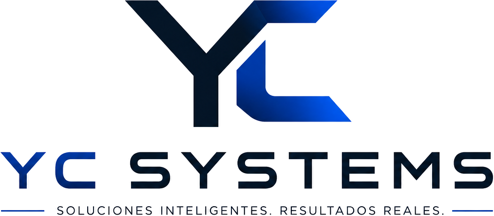

CRM, operaciones, reservas, documentos, reportes, usuarios, roles, pagos y flujos administrativos.
YC Systems / Business
Oferta empresarial
Soluciones digitales para empresas que necesitan operar mejor.
YC Systems for Business esta pensado para clientes grandes, socios e inversionistas que buscan sistemas internos, SaaS MVP, mantenimiento y transformacion digital con una ruta clara.

Que puede contratar una empresa
Cuatro lineas comerciales para crecer con orden.
Cada linea puede comenzar como MVP y evolucionar con mantenimiento mensual, nuevas funciones e integraciones.
Producto inicial para validar una idea con clientes reales: panel admin, API, usuarios, suscripciones e integraciones.
Mejoras mensuales, ajustes de contenido, nuevas pantallas, soporte, monitoreo basico y evolucion del producto.
Modernizacion de procesos manuales con dashboards, formularios, automatizaciones y herramientas web.
Forma de trabajo
Diagnostico, alcance, entrega y mejora continua.
YC Systems puede revisar el problema, proponer una ruta inicial, construir la primera version, publicar o entregar el sistema y mantenerlo como activo digital del negocio.
Propuesta inicial
Roadmap por fases
Repositorio y entrega tecnica
Mantenimiento disponible
ES / EN disponible
Analytics-ready